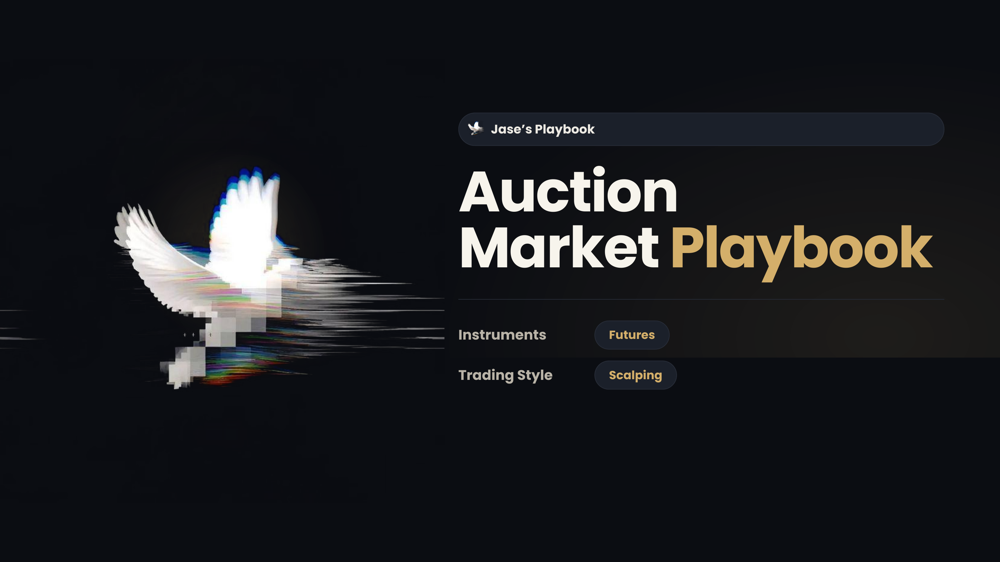

Most traders trade every breakout without checking one thing first: is the market balanced or not? This is the model I trade.
Wait until price clearly leaves value, then ride continuation into the next balance POC. Best in the New York session.
Fade the breakout that can't hold. Price snaps back to the POC where all the volume sits. London and thin conditions.